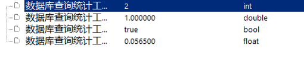
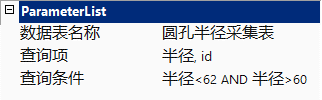

对已经连接的数据库里面的表进行查询统计，和数据库查询工具使用方法类似，就是输出结果不一样。如图1所示。

| 分类 | 参数名称 | 参数描述 |
|---|---|---|
| 属性窗口 | 数据表名称 | 需要查询的数据表的名称（前提是需要连接到表所在的数据库）。 |
| 查询项 | 需要查询的列的名称。 | |
| 查询条件 | 满足查询条件的逻辑表达式（多条件使用and、or或者()）。比如：半径>60 AND半径<65，或者稍复杂的：列名1= ‘Aa’ and 列名2= ‘Bb ’ and (列名3 = 888 or 列名4 = 888 )。 | |
| 图像窗口 | 无 | 无 |
| 数据链 | 无 | 无 |
| 高级界面 | 无 | 无 |
| 分类 | 参数名称 | 参数描述 |
|---|---|---|
| 监视窗口 | 结果个数 | 满足条件的记录的个数。 |
| 结果概率 | 满足条件的记录占总记录的概率。 | |
| 执行结果 | 工具执行结果。 | |
| 执行时间 | 工具执行时间。 | |
| 图像窗口 | 无 | 无 |
| 数据链 | 无 | 无 |
无
执行查询的时候要保证数据表名称和查询项都是存在的，否则数据库会报错。在查询之前可以检查数据库里面表的名称和列的名称，做到拼写正确，尽量与表的名称和列名大小写拼写一致。
关于多查询项和多条件查询的案例。
如何显示多列，需要在查询项将列名与列名使用逗号隔开，最后一个列名不需要加逗号。注意必须是英文的逗号，中文的逗号数据库会不认识。
关于多条件查询可以使用“and”和“or”和“( )”，注意这些都是英文环境下的符号。其中，“and”和“or”不区分大小写。见图2，多查询项和多条件查询。

参见“\Samples\数据库相关工具.gvp”。